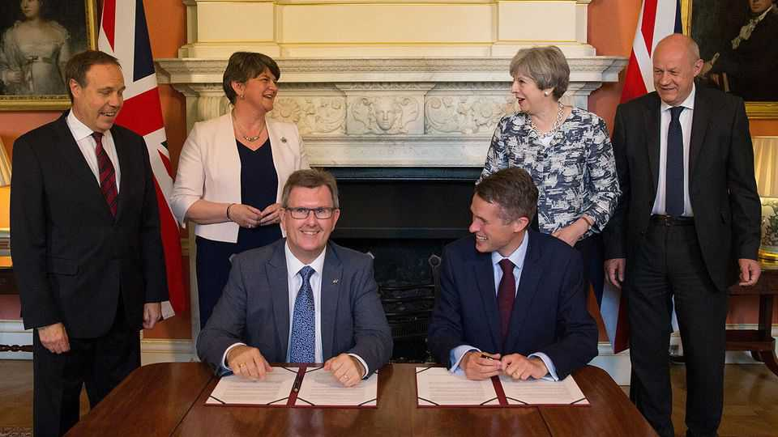

The shocking sexual-assault conviction of Sir Jeffrey Donaldson
The case of the former Democratic Unionist Party leader stuns friends and foes alike
June 25th 2026

NIne years ago in 10 Downing Street, Sir Jeffrey Donaldson signed the deal that enabled Theresa May to continue as prime minister. Under the confidence-and-supply agreement the Democratic Unionist Party (DUP) traded its ten MPs’ votes for £1bn ($1.3bn) for Northern Ireland. In recent weeks the ex-MP has been in the dock of a criminal court in Newry, County Down. On June 22nd the jury unanimously found him guilty of all charges against him: one count of rape, four of gross indecency and 13 of indecent assault.
Sir Jeffrey led the DUP until his arrest in March 2024 after two women alleged that he had sexually abused them as children. His trial has been the highest-profile one since Northern Ireland’s creation in 1921.
Now 63, Sir Jeffrey was from his teens seen as a rare political talent. He began his career as election agent to Enoch Powell, a former Tory MP whose time in mainstream British politics ended with his infamous “Rivers of Blood” speech predicting mass racial unrest due to immigration. Powell was welcomed into the Ulster Unionist Party as MP for South Down, where Sir Jeffrey grew up, and became a mentor to the rising star.
In 1985 Sir Jeffrey became the youngest assemblyman elected to Stormont, Northern Ireland’s (at the time powerless) devolved assembly. According to the charges, this was also the year when his offences began, continuing until 2008. Both of his accusers have anonymity, as is standard for sex-abuse cases in the United Kingdom.
In 1997 he entered Parliament as MP for Lagan Valley, south-west of Belfast. That is the year a Christian group organised a meeting with one of his victims in which he asked for her forgiveness. The following year he walked out of the talks which led to the Good Friday Agreement, the deal which ended 30 decades of sectarian violence known as the Troubles. Sir Jeffrey incessantly agitated against his then leader, David Trimble, but failed to topple the agreement and moved to the more hard-line DUP in 2004, as it was emerging as Northern Ireland’s biggest party.
He wore his evangelical faith on his sleeve—or, more precisely, on his lapel, where he displayed the Ichthys, the ancient Christian symbol of the fish. He continued to wear it in court, where he pleaded not guilty on all the charges. An excruciatingly hagiographic biography in 2004 presented him as a politician with a unique desire to enact God’s will on Earth.
His fall has been biblical. The case against this knight of the realm and privy counsellor (a member of the archaic body that advises the king) stunned friend and foe alike. The most serious allegation was that he raped a child of primary-school age. The prosecution pointed out one of the weaknesses in its own case: the lack of precise dates of the alleged assaults. Sir Jeffrey’s barrister put it to the first of his accusers that she may either have “fabricated” the abuse or else “dreamed it and over the years come to believe it is true”. She said this was “insulting”.
A letter Sir Jeffrey wrote to her in 2020—by which point he was DUP leader in the House of Commons—was read to jurors. The letter asked for her forgiveness “for the hurt, pain and distress I have caused”, referring to “sinful and selfish actions”, and saying that he wanted to “take full responsibility for it all”. His lawyer put it to her that “This has nothing to do with you and sexual assault.”
The court heard that Sir Jeffrey’s wife, Eleanor, placed an audio bug in his car because she believed that he was having an affair (he admitted in court to another affair). She had also faced criminal charges of aiding and abetting her husband’s alleged offences, and a charge of child cruelty. However, just before the proceedings were due to begin a judge ruled that she was mentally incapable of facing trial. She instead faced a “trial of the facts” in which evidence against her was heard and the jury concluded that she had “done the act”—the finding equivalent to guilty in such a process—but she cannot be jailed.
Complainant B alleged that she was raped as a child. The jury were told that when Sir Jeffrey was interviewed by police and her allegations put to him, he said that he “had no memory of that happening” and that it was “unbelievable”.
The direct impact on the DUP may be limited. Sir Jeffrey is no longer a member of the party, which seems to have acted properly in fully co-operating with the police as soon as it became aware of the allegations. But no one can be sure of the implications for Northern Ireland’s evangelical Christians. Many of them have long been entwined in politics. The DUP’s founder, the Rev Ian Paisley, proclaimed political messages from the pulpit and thundered scripture from political platforms. Sir Jeffrey was a more conventional politician than Paisley, but he used his faith to elevate his actions above the grubby arena, telling voters he was driven by a higher calling.
Sir Jeffrey was taken to jail immediately. He will be sentenced in September. He is likely to be stripped of his knighthood and shunned by former allies. It’s a long way from Downing Street in 2017.■
For more expert analysis of the biggest stories in Britain, sign up to Blighty, our weekly subscriber-only newsletter.